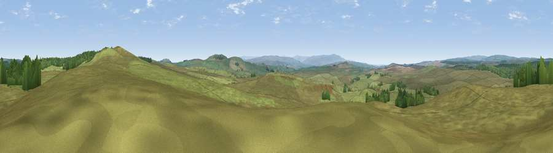

Viewpoint c11406_7438
#15317 in England · top 41% of its area beats it · —Where it is
The exact computed spot (NY 71925 70325). Click the marker for map links.
The view, rendered

A 360° render of this exact spot computed from the terrain model, tree cover and land cover — summer colours, afternoon light, calibrated against photographs of famous viewpoints. Real trees, hedges and buildings will differ in detail.
The panorama
Grey silhouette: terrain skyline in each direction (720 bearings, Earth curvature and refraction included). Dashed green: skyline with trees (+15 m) and buildings (+8 m) as obstacles. Blue strip: how far the ground is visible on each bearing.
Where the view opens
Wedge length = distance to the farthest visible ground on that bearing (vegetation-aware). Rings at 10, 25 and 50 km.
What fills the view
89% grassland · 11% woodland
Angular shares of the visible panorama (visual magnitude), not map area. Landscape diversity 0.15 (0–1 Shannon).
Key numbers
More beautiful places nearby
The staircase of upgrades: each row has a higher view potential than everything closer. Driving times are estimates from straight-line distance, calibrated against real road routing — check an actual route before setting out.
| Place | Direction | Drive | Score |
|---|---|---|---|
| Viewpoint c11409_7452 | ENE · 1 km | ~3 min | 64.2 |
| Viewpoint near Melkridge | SSE · 3 km | ~8 min | 69.0 |
| Viewpoint near Melkridge | SE · 3 km | ~8 min | 70.6 |
| Viewpoint near Bardon Mill | E · 8 km | ~16 min | 71.0 |
| Viewpoint near Greenhaugh | NNE · 14 km | ~25 min | 71.2 |
| Viewpoint c11634_7288 | NNW · 14 km | ~25 min | 71.8 |
| Viewpoint near Bewcastle | W · 15 km | ~26 min | 73.2 |
| Viewpoint near Bewcastle | WNW · 16 km | ~28 min | 78.9 |
55.02666, -2.44070 · source: screening · position refined by local search. Computed location — check access rights before visiting.